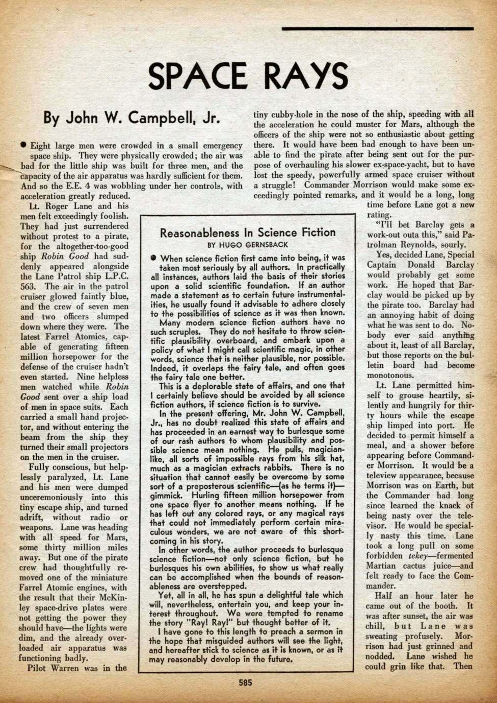

Reasonableness in Science Fiction
*Wonder Stories*, vol. 4 no. 7 , December 1932
DRAFT: Please do not share without permission of the author. Typeset versions in web | pdf | doc
When science fiction first came into being, it was taken most seriously by all authors. In practically all instances, authors laid the basis of their stories upon a solid scientific foundation. If an author made a statement as to certain future instrumentalities, he usually found it advisable to adhere closely to the possibilities of science as it was then known.
Many modern science fiction authors have no such scruples. They do not hesitate to throw scientific plausibility overboard, and embark upon a policy of what I might call scientific magic, in other words, science that is neither plausible, nor possible. Indeed, it overlaps the fairy tale, and often goes the fairy tale one better.
This is a deplorable state of affairs, and one that I certainly believe should be avoided by all science fiction authors, if science fiction is to survive.
In the present offering, Mr. John W. Campbell, Jr., has no doubt realized this state of affairs and has proceeded in an earnest way to burlesque some of our rash authors to whom plausibility and possible science mean nothing.1 he pulls, magician-like, all sorts of impossible rays from his silk hat, much as a magician extracts rabbits. There is no situation that cannot easily be overcome by some sort of a preposterous—(as he terms it)—gimmick. Hurling fifteen million horsepower from one space flyer to another means nothing. If he has left out any colored rays, or any magical rays that could not immediately perform certain miraculous wonders, we are not aware of this shortcoming in his story.
In other words, the author proceeds to burlesque science fiction—not only science fiction, but he burlesques his own abilities, to show us what really can be accomplished when the bounds of reasonableness are overstepped.
Yet, all in all, he has spun a delightful tale which will, nevertheless, entertain you, and keep your interest throughout. We are tempted to rename the story “Ray! Ray!” but thought better of it.
I have gone to this length to preach the sermon in the hope that misguided authors will see the light, and hereafter stick to science as it is known, or as it may reasonably develop in the future.
-
This editorial note introduces John W. Campbell’s short story, “Space Rays.” The ad for the story in the previous month’s issue announces:
‘Space Rays’ is a new and rather intriguing story by that popular author. Mr. Campbell probably had an unusual idea in writing this story. he not only has written a gripping adventure of space, but has at the same time put his finger on one of the weaknesses of science fiction. You will be amazed at the man who can throw a screw driver with the speed of a pistol bullet, and who can whip a dozen men at once. These feats, strange as they seem, are explained by our author scientifically, in a battle of one man against desperate odds.
Campbell would of course soon become famous as the editor of Astounding Science Fiction from 1937-1971, playing a decisive role in the development of the genre throughout the twentieth century. Here, Gernsback takes the opportunity to remind his readers (and potential contributors) of the empirical plausibility and educational aims of scientifiction as he first formulated it. Though Campbell himself would later demand the same sort of empirical rigor from his authors, this is evidently not what he was after in this story of space piracy and a hero from Jupiter with the strength of ten men. Commenting on Gernsback’s tone here, Gary Westfahl writes, “Clearly, Gernsback was imposing his own didactic message on a story with no satiric intent, but no doubt thought this was the gentlest way to inform Campbell and his colleagues that their colorful adventure stories were not the sort of science fiction he admired.” @westfahl_mightiest_2015, 23.
 ↩
Grant Wythoff, editor
grant.wythoff@gmail.com

This work is licensed under a Creative Commons Attribution-NonCommercial-NoDerivatives 4.0 International License.